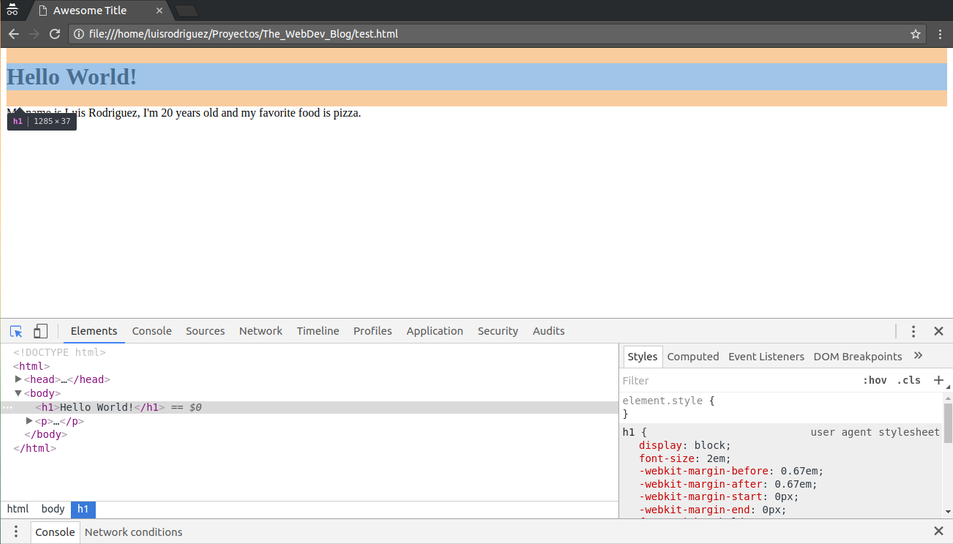
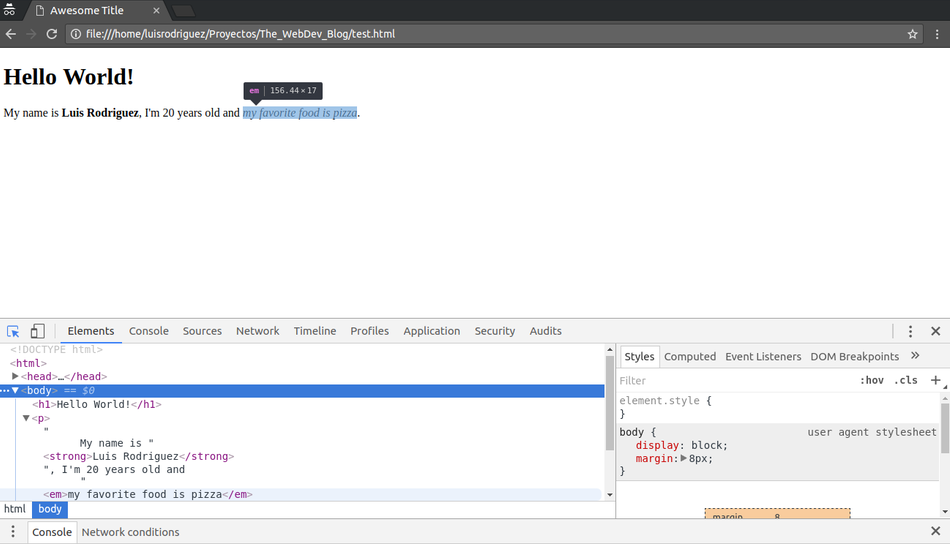

The elements we learned about in the last page (<h1> and <p>) are
block-level elements. What do I mean with this? Block-level elements
are elements that use all the available width in the place at which they’re
displayed in the browser, and have a top and bottom spacing (called margin)
surrounding them.
It is going to be easier if we visualize this. Luckily our browsers give us a set of tools to make development better. Whether you’re using Google Chrome or Mozilla Firefox, press Ctrl + Shift + C. This set of keys should open your developer tools.
Using your mouse, hover over the text in your HTML page. It should look something like this:

Here, I’m hovering over the <h1> element. In the blue background we can see
represented the width of the element and in the
orange background we see represented the top and bottom spacing (called margin)
of the element.
Now we’re going to learn about inline-level elements. The first two
we’re going to cover are <strong></strong> and <em></em>.
In your HTML file, enclose your name with the <strong></strong> tags and
the random fact about yourself with the <em></em> tags. Like this:
<!DOCTYPE html>
<html>
<head>
<meta charset="utf-8">
<title>Awesome Title</title>
</head>
<body>
<h1>Hello World!</h1>
<p>
My name is <strong>Luis Rodriguez</strong>, I'm 20 years old and
<em>my favorite food is pizza</em>.
</p>
</body>
</html>
Notice that you can separate the text inside of your paragraph in separate lines and your browser will treat it as one space. This feature is called “white space collapsing” and makes your HTML code easier to follow by allowing you to add new lines or extras spaces to improve the readability of your HTML documents.
Save and refresh your page. You should now be seeing your name in bold and your random fact in italics.
The purpose of the <strong></strong> element is not just only to make some text
bold but it also indicates that the content inside of it has a strong importance.
In the same vein, the purpose of the <em></em> element (besides
displaying text in italics) is to make an emphasis in the pronunciation of
the content inside of it to subtly change the meaning of a sentence.
Now onto to the “inline-level elements” part. Why are these elements considered to be inline? See the screenshot below:

As you can see, when we hover our <em></em> element with the developer
tools inspector, we can notice two things:
Pretty much, those are the differences between block-level elements and inline-level elements. Block-level elements have top and bottom spacing and have a width of 100% on the page while inline-level elements don’t have those top and bottom spacings and its width is dependent on the content inside of them.
Later on, when we learn about the <span></span> and
<div></div> elements and how to style our HTML pages with CSS, this
knowledge is going to be a lot more useful.